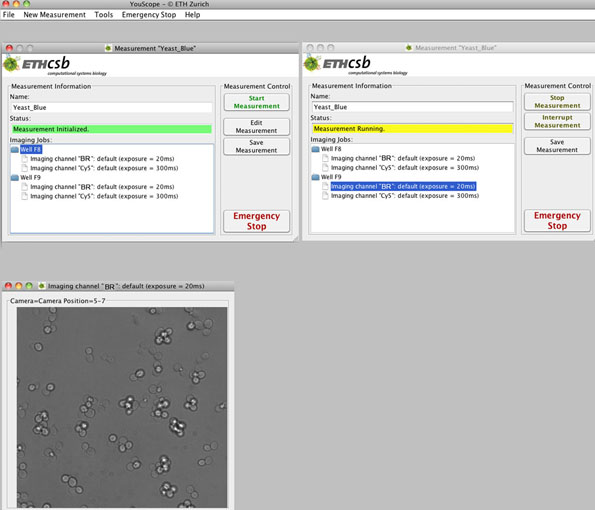

YouScope : Running and Stopping a Measurement
This page last changed on May 05, 2011 by haclaudi.
Running and Stopping a Measurement
After all parameters are adjusted, the measurement can be started in the measurement window identified with the name of the measurement given in the Measurement Properties. The measurement window consists of two parts, Measurement Information and Measurement Control.
Measurement Information
- Name: The name given in Measurement Properties can only be read.
- Status: This field informs about the Status of the System. The message Measurement Initialized means that the system is ready to start the imaging and the measurement can be started with Start Measurement in Measurement Control. The message changes into Measurement Running, followed by Measurement Finished.
- Imaging Jobs: In the field imaging jobs the names of images are displayed, for each well or position. They can be double clicked and a image window turns up, where the images are instantly displayed during measurement.
Measurement Control
- Edit Measurement: This option gives the possibility to go back to the four windows containing the measurement parameters to control or to edit them.
- Save Measurement: After the measurement is configured, it can be saved to use it later again.
- Stop Measurement: Stops a running measurement after the task is completed.
- Interrupt Measurement. The measurement will be stopped immediately, the job or task will not be completed, and the measurement end settings are not set.
- Emergency Stop: The system is switched-off as fast as possible and the microscope is blocked to get any other call from YouScope until emergency state is reseted.
| Emergency Stop We highly recommend to have always a hardware emergency stop button in your proximity during a measurement ( e.g. the power supply button of the microscope) instead of relying on this feature in YouScope. It could be that in such a case the computer is crashed and then its useless to use this option in the program! After usage of the Emergency Stop the system has to be reseted by Tools->Reset Emergency. The owner of this site shall not be responsible does not guaranty that the Emergency Stop will stop the measurement in case of emergency. |

{kind=link}
{kind=link}
{kind=link}
{kind=link}
{kind=link}
{kind=link}